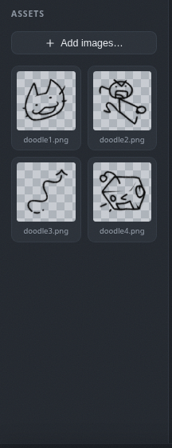
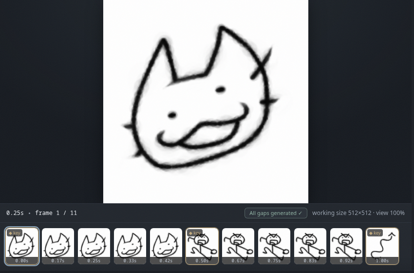
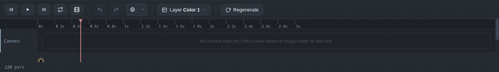
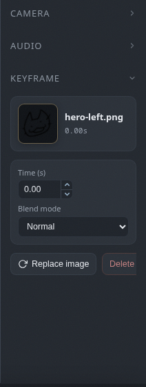

The interface
Where everything lives: assets, preview, timeline, selection panel and layers.
The assets panel
The panel on the left is your image library, and its images are itching to become keyframes.
- Use
Add imagesto bring in art. - Drag an image onto the timeline to make a keyframe. Yes, it really is that easy.
- Hover a tile to reveal a delete badge. Deleting an image removes it from the library only, never from the timeline.

The preview
The big canvas in the center shows the current frame, and the filmstrip under it shows every frame of the animation.
- Press play to watch it move, or step frame by frame with the arrow keys.
- Click a filmstrip thumb to jump to that frame.
- The outlined thumb marks the frame you are looking at.

The timeline
Each layer has its own track along the bottom. Keyframes appear as chips, and the space between two keyframes is a gap.
- Click a chip to select it.
- Drag a chip to move it in time.
- Drag a chip's edges to change how long it holds.
- Click a gap to open its inbetween options. This is where the tool earns its keep.

The selection panel
The panel on the right shows the details of whatever you have selected, whether that is a keyframe, a gap or a color dot.
- Set exact times and blend modes for keyframes.
- Choose how a gap fills in its inbetweens, and tune squash and motion blur.
- Edit a color dot's color, threshold, grow and gradient.

Layers
The Layer button in the toolbar opens the layer menu.
- Add a normal layer or a color layer.
- Rename, hide or remove the active layer.
- Layers draw from top to bottom, and each one keeps its own keyframes and gaps.
- Drag layers up and down in the menu to reorder them.